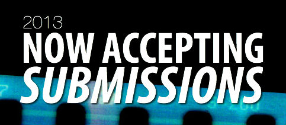
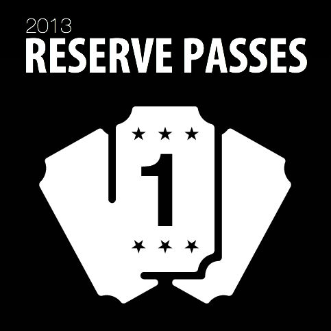
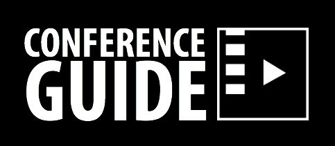

| HOME | FESTIVAL | CONFERENCE | SUBMIT | SPONSORS | ATTEND |
My Name Is Khan, and I Am Not
a Terrorist: How My Name Is Khan Defies Muslim Stereotypes in Popular
Hindu Cinema
with Olivia Simmons, University of North Carolina Wilmington
with Olivia Simmons, University of North Carolina Wilmington
This essay sheds light on the history behind the common portrayal (or lack thereof) of non-Hindu “others” (particularly Muslims) in Bollywood Cinema and examines how the Karan Johar’s hit film My Name is Khan (2010) breaks the norm of these often offensive representations.
Simmons is in her final year at UNCW. She recently completed her internship with Morgan Freeman’s and Lori McCreary’s production company, Revelations Entertainment.
Touki Bouki: Djibril Diop
Mambety and the Postcolonial Aesthetic
with Michael Daye, University College Falmouth, United Kingdom
with Michael Daye, University College Falmouth, United Kingdom
Daye defines traits of a post-colonialist aesthetic through analysis of Mambety’s Senegalese film Touki Bouki (1937) by exploring particular motifs within the film in the context of Third Cinema.
War and Poetry: The Use of
Genre Violence and Poetic Digression in The Thin Red Line
with Jacob Mertens, University of North Carolina Wilmington
with Jacob Mertens, University of North Carolina Wilmington
Mertens argues that The Thin Red Line (1998) challenges viewers to integrate the war genre and poetic segments into a holistic understanding of the narrative, allowing the film’s conventional war segments to transcend their base violence, engendering a feeling of beauty and existential depth.
Mertens is an 'In the Field' writer for Film International. The internationally distributed journal and online resource aims to “bridge the gap between the academy and the outside world” all the while encouraging participation from various scholars.
Repressed Tension in Haute
Tension
with Zulma Y. Terrones, University of Chicago
with Zulma Y. Terrones, University of Chicago
Terrones dissects the horror genre’s established gender conventions and how these become complicated when a female murderer replaces the traditional male killer. The discussion further examines how the genre relies on an unbalanced power relationship, where male superiority and female passivity parallels the repressed woman’s status of the patriarchal society that critiques it.
Robert Siodmak: His Career
and Contributions to Film Noir
with Gregory Baker, North Carolina School of the Arts
with Gregory Baker, North Carolina School of the Arts
Baker explores Siodmak’s career from UFA through Hollywood and beyond, uncovering important influences on his directorial style and examining how that style benefited Siodmak’s considerable body of work in film noir.
Baker is currently a professional screenwriter under contract for a sci-fi/action film. He is also working on new feature screenplays as well as an independently produced television series set to debut in 2013.
Bruce Conner Knows That Girls
Just Want to Have Fun: Humanist Sexual Liberation in Avant Garde Film
with William Frasca, University of North Carolina Wilmington
with William Frasca, University of North Carolina Wilmington
Frasca takes a look at three avant-garde films by Bruce Connor–-Cosmic Ray (1961), Breakaway (1966) and Marilyn Times Five (1973)–-and how these powerful combinations of pop music and film challenge taboos and cultural norms of female sexuality.
Action Stars Who Don’t Get
Any Action: Hong Kong Actors in U.S. Roles
with Javi Zubizarreta, University of Notre Dame
with Javi Zubizarreta, University of Notre Dame
The Eastern philosophical view of masculinity and its influence on Hong Kong cinema are examined and compared to Hollywood ideals of masculinity to offer a cross-cultural explanation for the continued emasculation of Asian male actors. A feminist critique is also used to further the reasoning behind the degradation of Asian manhood in Hong Kong and American films.
Zubizarreta has continued to research the “depiction of nationalism, terrorism, and violence in film by Basque and Irish filmmakers in hopes of finding constructive means of national expression.” His latest work includes videos that he wrote and directed to promote the North American Basque Organizations.
Illegal
Celluloid: An Investigation of American Pornography, the American
Avant-Garde, and Their Crucial Intersections in the 1960s and 1970s
with Royce Marcus, University of North Carolina at Wilmington
with Royce Marcus, University of North Carolina at Wilmington
Marcus provides a closer look at the evolving relationship between pornography and avant-garde cinema throughout the 60s and 70s, exploring how these two genres ultimately influenced and supported one another in the face of constant judicial scrutiny and public criticism in America.
Marcus was also a presenter at the 2012 PCA/ACA (Pop Culture Association/American Culture Association) Conference. He is currently creating a music video for the electronic duo LIBRARIES.
|  |
|  |
|  |
| Archives |
| 2012 Conference |
| ABOUT |
FESTIVAL |
CONFERENCE |
SUBMIT |
EVENTS |
ATTEND |
SPONSORS |
PRESS |
| Mission The Awards Meet the Staff FAQ Contact Us |
Film Selections Archives 2012 |
Paper Selections Archives 2012 |
Overview Forms & Guidelines |
1Hr:1Tk Video Race Screening Tour The After Party |
Event Schedule Reserve Passes Parking & Venues Travel & Lodging |
2013 Sponsors Become a Sponsor |
In the News Visions PR |